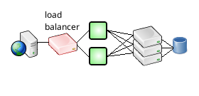
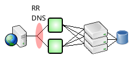

Contents
Contents  Primary-Replica Query Routing | High Availability | Security Features
Primary-Replica Query Routing | High Availability | Security Features 
Front-End Load Balancing and Failover
If you are building out a high availability environment, or if your pool of application servers is just sufficiently large, you might want to set up a pool of SQL Relay servers between your application servers and the database, and distribute client applications over the pool using host randomization, a load balancing appliance, or round-robin DNS.
Host Randomization
Since version 2.0.1, host randomization can be used to distribute SQL Relay client sessions over a pool of SQL Relay hosts.
Any application which uses one of the SQL Relay Native APIs, including applications which use the SQL Relay driver for a database abstraction layer, can be configured to connect to a set of servers instead of just a single server by specifying the host or server parameter as a comma-separated set of hosts. Internally, the API will attempt to connect to a random host in the set, until the attempt succeeds, or there are no more hosts left to try.
For example, the sqlrsh command line tool can be configured to connect to sqlr01, sqlr02, and sqlr03 as follows:
sqlrsh -host sqlr01,sqlr02,sqlr03 -user scott -password tiger
Other SQL Relay command line tools can be configured similarly.
A program written using the SQL Relay Native API for C++ can be configured to connect to the same set of hosts as follows:
sqlrconnection *con=new sqlrconnection("sqlr01,sqlr02,sqlr03",9000,NULL,"scott","tiger",0,1);
Other SQL Relay Native APIs can be configured similarly.
A program that uses the SQL Relay driver for ODBC can be configured as follows:
[sqlrexample] Description=Connection to SQL Relay Pool Driver=SQLRelay Server=sqlr01,sqlr02,sqlr03 Port=9000 Socket= User=scott Password=tiger
A program that uses the SQL Relay driver for Perl DBI can be configured as follows:
my $dbh=DBI->connect("DBI:SQLRelay:host=sqlr01,sqlr02,sqlr03;port=9000","scott","tiger");
Programs that use SQL Relay drivers for other database abstraction layers can be configured similarly.
Load Balancing Appliance
Multiple instances of SQL Relay can be placed behind a load balancing appliance.

In this illustration, the load balancing appliance is shown as a single machine, but in a true HA environment, there would be 2 or more appliances sharing a virtual IP. Alternatively, rather than using an appliance, SQL Relay can be run on an application server cluster such as Linux Virtual Server.
Round-Robin DNS
Round-robin DNS can be also be used to distribute clients over multiple SQL Relay servers.

In a round-robin DNS scenario, multiple IP addresses are assigned to the same host name. The SQL Relay client is then configured to connect to that host. When it requests the IP addresses for the host, the client receives all of the IP addresses assigned to it, rather than just a single address.
Round-robin DNS is so-called because, traditionally, the order of the IP addresses returned on successive requests alternated reliably, in round-robin fashion. This behavior persists in many environments, but it is no longer guaranteed, as many modern DNS resolvers sort the list and return the IP addresses in the same order, every time. SQL Relay clients randomize the list though, and try to connect to each of the IP addresses, one-at-a-time, until they succeed. Doing so provides both load balancing and failover without requiring an appliance or application server cluster.
Contents Primary-Replica Query Routing | High Availability | Security Features